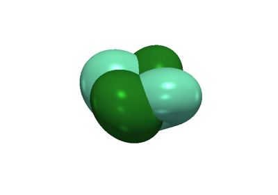

Advanced#
Include here are few longer, more advanced examples from our users and developers.
Adding a New Gallery Example
Compare Field Across Mesh Regions
Compare Field Across Mesh Regions

Plot OpenFOAM data
Plot Open Street Map Data
3D Earth and Celestial Bodies
Visualize the Moeller–Trumbore Algorithm
Visualize the Moeller–Trumbore Algorithm
Ray Tracing

Turning the sphere inside out
Displaying eigenmodes of vibration using warp_by_vector
Displaying eigenmodes of vibration using ``warp_by_vector``